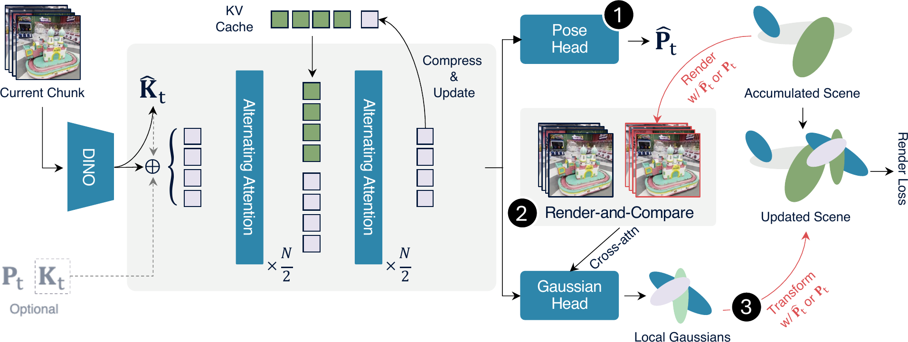
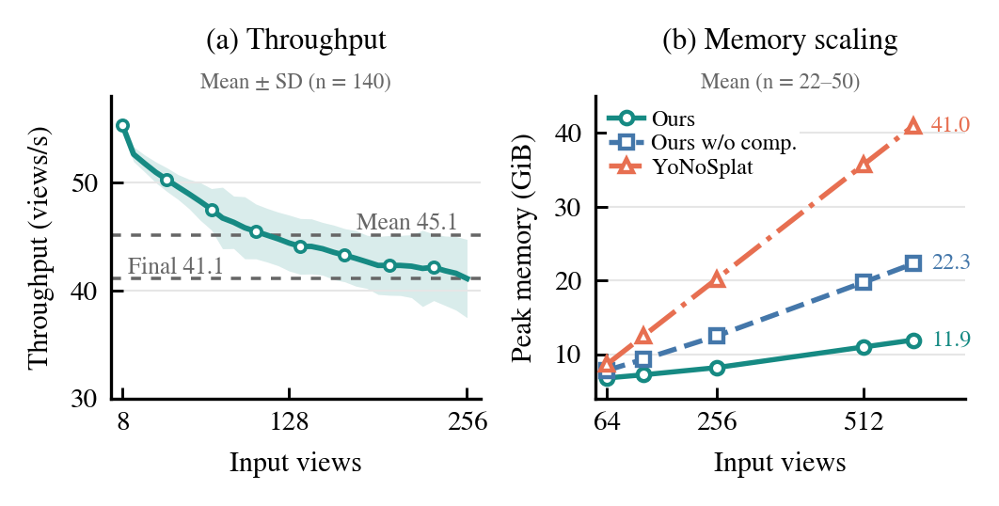

Estimate the camera
The pose head predicts camera parameters when they are not provided.
Online 3D reconstruction
Real-time online feed-forward Gaussian Splatting from posed or unposed image streams via render-and-compare conditioning and KV-cache compression.
Abstract
Online novel view synthesis requires a model to reconstruct a scene causally from a stream of observations while keeping it renderable at every moment. We present ReCoSplat, an online feed-forward Gaussian Splatting model supporting both posed and unposed inputs, with or without camera intrinsics. While assembling local Gaussians with camera poses scales better than canonical-space prediction, stable training requires ground-truth poses, creating a distribution mismatch when predicted poses are used at inference. To address this, we introduce a Render-and-Compare module that renders the accumulated scene from the viewpoint of the incoming observation and compares the render with the observation to produce a stable conditioning signal. For long sequences, a hybrid KV-cache compression strategy combines early-layer truncation with chunk-level selective retention, reducing the KV cache by more than 90% for streams of 100 or more frames.
Method
Each incoming chunk updates both the compressed history and the explicit Gaussian scene.

The pose head predicts camera parameters when they are not provided.
The accumulated scene is rendered at the assembly pose and paired with the incoming observation.
New local Gaussians are transformed into world coordinates and merged into the scene.
Quantitative results
Table 1 evaluates 32, 64, 128, and 256 input views sampled from the first 180, 240, 300, and up to 360 frames of each scene, respectively.
PSNR and SSIM are higher-is-better; LPIPS is lower-is-better; offline methods access all input views at once and are excluded from the online ranking; N/A† indicates that a method exceeds 48 GB at its training resolution.
Video results
Explore novel-view renderings as the input stream grows from 32 to 256 views.
Videos are muted and loop automatically while visible; select a video to pause or resume it.
Online efficiency
Hybrid KV-cache compression keeps the update cost bounded while preserving an explicit, renderable scene.

Average input throughput across a 256-view stream.
Input throughput at the end of a 256-view stream.
Average peak memory at 600 input views.
Runtime and memory are profiled at 224 × 224 resolution with chunk size 8 on an RTX 6000 Ada GPU.
Citation
@article{cheng2026recosplat,
title = {ReCoSplat: Online Feed-Forward Gaussian Splatting via Render-and-Compare},
author = {Cheng, Freeman and Ye, Botao and Li, Xueting and You, Junqi and Zhan, Fangneng and Yang, Ming-Hsuan},
journal = {arXiv preprint arXiv:2603.09968},
year = {2026}
}